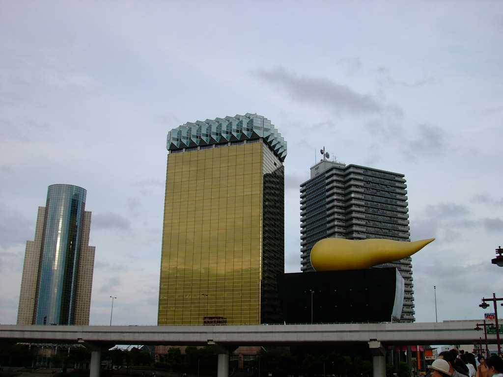

The big yellow building in the middle of this picture is the headquarters of Asahi. It might not be totally obvious to you, but the building actually represents a glass of beer, with the foam on top. The bizarre construction on the right is supposed to be a flame...
